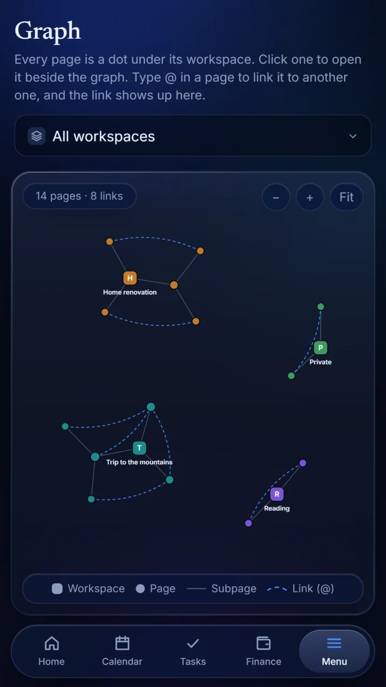
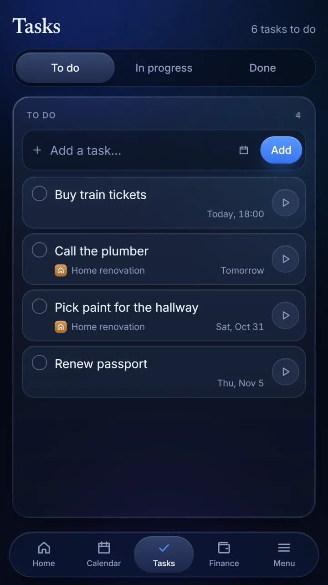
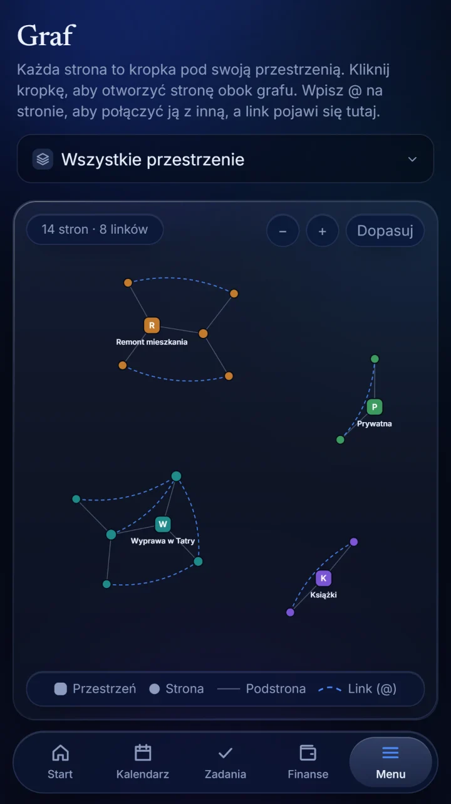
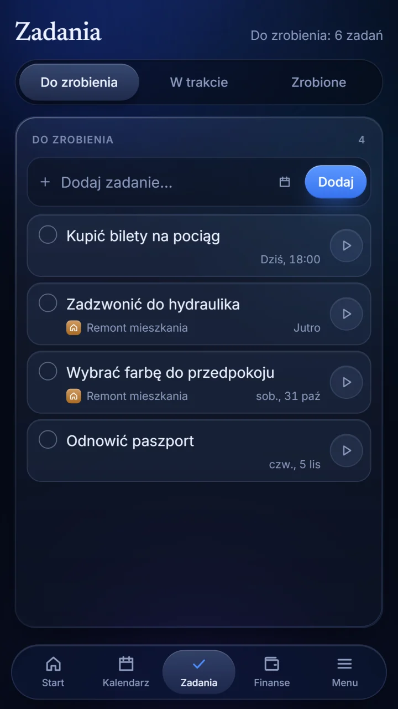

Pages
Write in workspaces, alone or together live, with everyone's cursor on the page. Add pictures and files, link pages with @ and see them as a graph.
Notereef keeps what you would otherwise spread over five apps: pages you write alone or with others, a calendar, tasks, your budget and savings, and whiteboards.
No ads, no tracking. In English, Polish, German and Spanish.
What is inside
One app instead of five, and one calm look for all of it.
Write in workspaces, alone or together live, with everyone's cursor on the page. Add pictures and files, link pages with @ and see them as a graph.
Your days and what is planned in them, yours alone or shared with a workspace. Events can come back every week, month or year, and a timetable can be read from a screenshot.
A board of three columns: to do, in progress and done. With deadlines, reminders on your phone and, in an organization, the department a task is for.
A monthly budget, stocks and other assets with current prices, savings goals, and expenses shared with friends.
Sketch, write and stick notes on a board without edges, alone or with others.
Cells with values, formulas and about a hundred functions, shared like everything else. A cell can even be worked out by a few lines of code.
An assistant that looks into your calendar, tasks, pages and spreadsheets and adds to them once you allow it. It runs on your own key from Google, Anthropic or OpenAI.
Every organization has a chat: channels for everyone or for chosen people, and private messages between two. An @ points at a page, an event or a task.
A shared place for a family, a team or a company, with departments. You choose, part by part, who may change things, who may only look and who sees nothing.
Pages
Every page is a dot under its workspace. Type @ to link one page to another, and the link shows up in the graph.

Calendar and tasks
The calendar and the tasks sit next to your notes, not in another app.

Finance
See where a month went at a glance, and what is left of it.
Organizations
An organization has its own Home, calendar, tasks, finances and workspaces, apart from everyone's private things.
Yours
What you write is yours. The app is built to leave it that way.
No advertising and no analytics tools. Nothing follows you around.
Screenshots you import are read on your device and never sent anywhere.
Your content is stored on servers in the European Union.
Delete your account with everything in it, in the app or on this site.
Sign up with an email address and a name, and the first page is yours to write.
Notereef trzyma to, co zwykle jest rozrzucone po pięciu aplikacjach: strony pisane samodzielnie lub z innymi, kalendarz, zadania, budżet i oszczędności oraz tablice.
Bez reklam i bez śledzenia. Po polsku, angielsku, niemiecku i hiszpańsku.
Co jest w środku
Jedna aplikacja zamiast pięciu i jeden spokojny wygląd dla całości.
Pisz w przestrzeniach, samodzielnie albo wspólnie na żywo, z kursorem każdej osoby na stronie. Dodawaj obrazy i pliki, łącz strony znakiem @ i oglądaj je jako graf.
Twoje dni i to, co w nich zaplanowane, tylko dla Ciebie albo wspólnie z przestrzenią. Wydarzenia mogą wracać co tydzień, miesiąc lub rok, a plan zajęć można odczytać ze zrzutu ekranu.
Tablica z trzema kolumnami: do zrobienia, w trakcie i zrobione. Z terminami, przypomnieniami na telefonie i, w organizacji, wydziałem, który ma zadanie wykonać.
Budżet miesiąca, akcje i inny majątek z aktualnymi cenami, cele oszczędnościowe oraz wydatki dzielone ze znajomymi.
Szkicuj, pisz i przyklejaj karteczki na tablicy bez krawędzi, samodzielnie albo z innymi.
Komórki z wartościami, formułami i około setką funkcji, udostępniane jak wszystko inne. Komórkę może nawet wyliczać kilka linijek kodu.
Asystent, który zagląda do kalendarza, zadań, stron i arkuszy i dopisuje do nich, gdy na to pozwolisz. Działa na Twoim własnym kluczu od Google, Anthropic lub OpenAI.
Każda organizacja ma czat: kanały dla wszystkich albo dla wybranych osób i prywatne wiadomości między dwiema osobami. Znak @ wskazuje stronę, wydarzenie lub zadanie.
Wspólne miejsce dla rodziny, zespołu lub firmy, z wydziałami. To Ty wybierasz, część po części, kto może zmieniać, kto tylko oglądać, a kto nie widzi nic.
Strony
Każda strona to kropka pod swoją przestrzenią. Wpisz @, żeby połączyć jedną stronę z drugą, a połączenie pojawi się na grafie.

Kalendarz i zadania
Kalendarz i zadania są tuż obok notatek, a nie w innej aplikacji.

Finanse
Jedno spojrzenie i wiesz, na co poszedł miesiąc i ile z niego zostało.
Organizacje
Organizacja ma własny Start, kalendarz, zadania, finanse i przestrzenie, osobno od prywatnych rzeczy każdej osoby.
Twoje
To, co piszesz, jest Twoje. Aplikacja jest zbudowana tak, żeby tak zostało.
Żadnych reklam ani narzędzi analitycznych. Nic za Tobą nie chodzi.
Importowane zrzuty ekranu są odczytywane na Twoim urządzeniu i nigdzie nie są wysyłane.
Twoje treści są przechowywane na serwerach w Unii Europejskiej.
Usuń konto ze wszystkim, co w nim jest: w aplikacji albo na tej stronie.
Załóż konto, podając adres e-mail, imię i nazwisko, a pierwsza strona czeka na Twoje słowa.
Notereef bewahrt auf, was du sonst über fünf Apps verteilen würdest: Seiten, die du allein oder mit anderen schreibst, einen Kalender, Aufgaben, dein Budget und deine Ersparnisse sowie Whiteboards.
Keine Werbung, kein Tracking. Auf Deutsch, Englisch, Polnisch und Spanisch.
Was drin ist
Eine App statt fünf, und ein ruhiges Aussehen für alles.
Schreibe in Arbeitsbereichen, allein oder gemeinsam in Echtzeit, mit dem Cursor jeder Person auf der Seite. Füge Bilder und Dateien hinzu, verknüpfe Seiten mit @ und sieh sie als Graph.
Deine Tage und was in ihnen geplant ist, nur für dich oder mit einem Arbeitsbereich geteilt. Termine können jede Woche, jeden Monat oder jedes Jahr wiederkehren, und ein Stundenplan lässt sich aus einem Screenshot einlesen.
Ein Board mit drei Spalten: zu erledigen, in Arbeit und erledigt. Mit Fristen, Erinnerungen auf deinem Handy und, in einer Organisation, der Abteilung, für die eine Aufgabe gedacht ist.
Ein Monatsbudget, Aktien und anderes Vermögen mit aktuellen Kursen, Sparziele und Ausgaben, die du mit Freunden teilst.
Skizziere, schreibe und klebe Notizen auf ein Board ohne Ränder, allein oder mit anderen.
Zellen mit Werten, Formeln und rund hundert Funktionen, geteilt wie alles andere. Eine Zelle kann sogar von ein paar Zeilen Code berechnet werden.
Ein Assistent, der in deinen Kalender, deine Aufgaben, Seiten und Tabellen schaut und etwas hinzufügt, sobald du es erlaubst. Er läuft mit deinem eigenen Schlüssel von Google, Anthropic oder OpenAI.
Jede Organisation hat einen Chat: Kanäle für alle oder für ausgewählte Personen und private Nachrichten zwischen zweien. Ein @ zeigt auf eine Seite, einen Termin oder eine Aufgabe.
Ein gemeinsamer Ort für eine Familie, ein Team oder eine Firma, mit Abteilungen. Du bestimmst Bereich für Bereich, wer etwas ändern darf, wer nur zusehen darf und wer nichts sieht.
Seiten
Jede Seite ist ein Punkt unter ihrem Arbeitsbereich. Tippe @, um eine Seite mit einer anderen zu verknüpfen, und die Verknüpfung erscheint im Graphen.
Kalender und Aufgaben
Der Kalender und die Aufgaben liegen direkt neben deinen Notizen, nicht in einer anderen App.
Finanzen
Sieh auf einen Blick, wohin ein Monat gegangen ist und was von ihm übrig ist.
Organisationen
Eine Organisation hat einen eigenen Start, einen eigenen Kalender, eigene Aufgaben, Finanzen und Arbeitsbereiche, getrennt von den privaten Dingen jeder Person.
Deins
Was du schreibst, gehört dir. Die App ist so gebaut, dass es dabei bleibt.
Keine Werbung und keine Analysewerkzeuge. Nichts verfolgt dich.
Screenshots, die du importierst, werden auf deinem Gerät gelesen und nirgendwohin gesendet.
Deine Inhalte liegen auf Servern in der Europäischen Union.
Lösche dein Konto mit allem, was darin ist, in der App oder auf dieser Website.
Registriere dich mit einer E-Mail-Adresse und einem Namen, und die erste Seite wartet auf deine Worte.
Notereef guarda lo que de otro modo repartirías entre cinco aplicaciones: páginas que escribes a solas o con otras personas, un calendario, tareas, tu presupuesto y tus ahorros, y pizarras.
Sin anuncios ni rastreo. En español, inglés, polaco y alemán.
Lo que hay dentro
Una aplicación en lugar de cinco, y un mismo aspecto tranquilo para todo.
Escribe en espacios, a solas o en directo con otras personas, con el cursor de cada una en la página. Añade imágenes y archivos, enlaza páginas con @ y míralas como un grafo.
Tus días y lo que hay planeado en ellos, solo para ti o compartido con un espacio. Los eventos pueden repetirse cada semana, mes o año, y un horario se puede leer de una captura de pantalla.
Un tablero de tres columnas: por hacer, en curso y hechas. Con fechas límite, recordatorios en tu teléfono y, en una organización, el departamento al que va la tarea.
Un presupuesto mensual, acciones y otros bienes con precios actuales, metas de ahorro y gastos compartidos con amigos.
Dibuja, escribe y pega notas en una pizarra sin bordes, a solas o con otras personas.
Celdas con valores, fórmulas y cerca de cien funciones, compartidas como todo lo demás. Una celda incluso puede calcularse con unas líneas de código.
Un asistente que mira tu calendario, tus tareas, páginas y hojas de cálculo y añade cosas cuando se lo permites. Funciona con tu propia clave de Google, Anthropic u OpenAI.
Cada organización tiene un chat: canales para todos o para personas elegidas y mensajes privados entre dos. Una @ señala una página, un evento o una tarea.
Un lugar compartido para una familia, un equipo o una empresa, con departamentos. Tú eliges, parte por parte, quién puede cambiar las cosas, quién solo puede mirar y quién no ve nada.
Páginas
Cada página es un punto bajo su espacio. Escribe @ para enlazar una página con otra, y el enlace aparece en el grafo.
Calendario y tareas
El calendario y las tareas están junto a tus notas, no en otra aplicación.
Finanzas
Ve de un vistazo en qué se fue un mes y cuánto queda de él.
Organizaciones
Una organización tiene su propio Inicio, calendario, tareas, finanzas y espacios, aparte de las cosas privadas de cada persona.
Tuyo
Lo que escribes es tuyo. La aplicación está hecha para que siga siéndolo.
Sin publicidad ni herramientas de análisis. Nada te sigue.
Las capturas de pantalla que importas se leen en tu dispositivo y no se envían a ninguna parte.
Tu contenido se almacena en servidores de la Unión Europea.
Elimina tu cuenta con todo lo que hay en ella, en la aplicación o en este sitio.
Regístrate con una dirección de correo y un nombre, y la primera página es tuya para escribir.